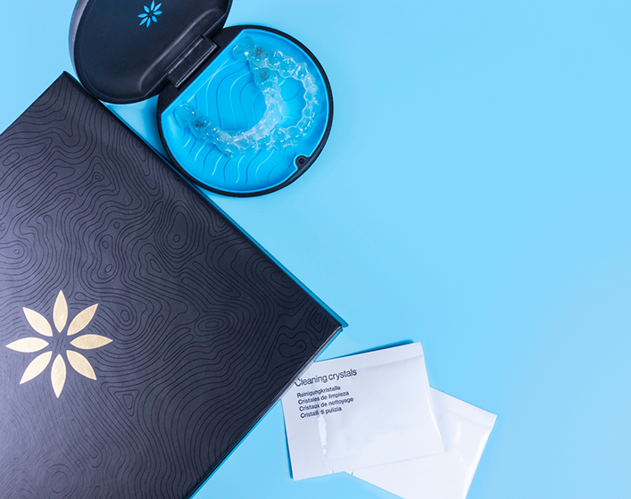
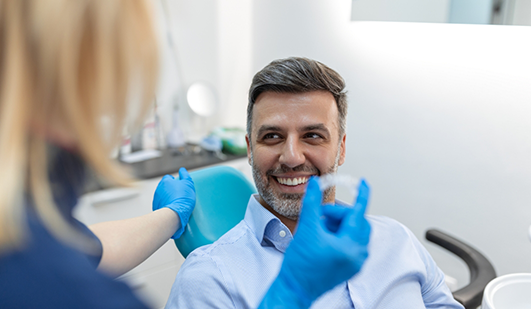
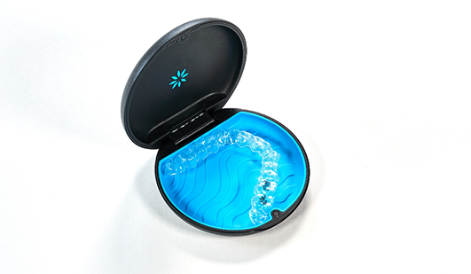
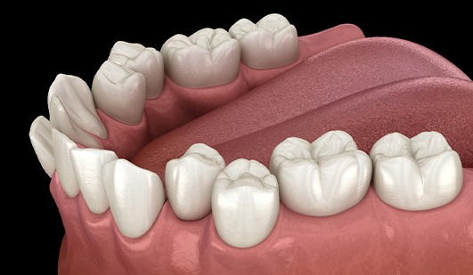
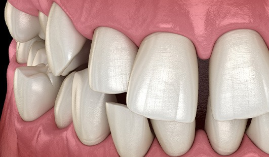
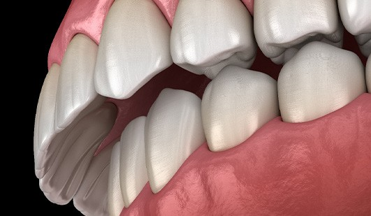
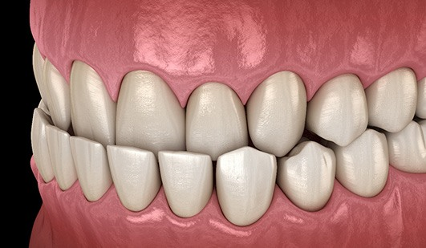
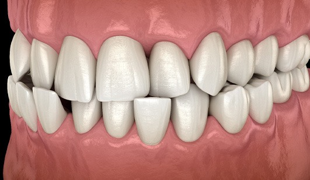
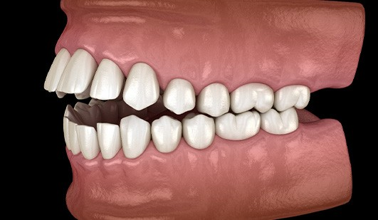
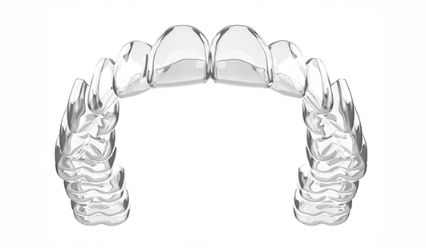

Invisalign® Clear Aligners Hays
A Discreet Alternative to Metal Braces

Our dentists at Lifetime Dental Care offer Invisalign aligners to discreetly correct crowding, misalignment, gaps, and bite problems. These comfortable, clear aligners are a popular choice among patients, as they are transparent and can be easily removed for eating and brushing your teeth. Call (785) 377-0479 today to learn more about Invisalign in Hays and to schedule your consultation with our knowledgeable dentists today.
Why Choose Lifetime Dental Care for Invisalign®?
- SimplyClear Orthodontic Aligners Are Also Available
- Dentist Who is a Preferred Invisalign Provider
- Comfortable & Precise Digital Impressions
How Does Invisalign® Work?
Invisalign aligners offer a discreet orthodontic treatment option for those looking to straighten their smile without the use of traditional metal brackets and wires. Instead, the Invisalign system uses custom-made, computer-generated plastic aligners to gradually straighten teeth. Each set of aligners is precisely designed to make small adjustments to the alignment of your teeth. By switching to a new set of aligners approximately every two weeks, your teeth will gently and gradually move into their proper positions. Regular visits to our office will ensure your treatment progresses as planned.
The Invisalign® Process

During your initial visit, we will assess whether you are a suitable candidate for Invisalign clear aligners. This treatment is often ideal for adults and teenagers seeking a virtually invisible orthodontic solution. Besides being discreet, Invisalign aligners are comfortable, made from smooth, thin plastic, and are removable. This feature allows you to easily take them out for eating, brushing and flossing. Contact us today to learn more about Invisalign clear aligners and schedule your consultation with our skilled Preferred Invisalign Provider.
Who Can Invisalign® Help?

Are you struggling to smile confidently because there is a noticeable gap between your two front teeth? Maybe you’re having trouble chewing properly because your teeth overlap considerably. In both cases, you might assume that traditional braces are your only option. However, Invisalign® can correct several common orthodontic problems, including:
Crowded Teeth

Even relatively minor overcrowding can lead to several issues, including trouble chewing properly and smiling confidently. The good news is that patients with mild to moderate cases are often candidates for Invisalign®! If we determine that’s the case for you during your consultation, then we can guide your teeth into their ideal places with a custom series of aligners that are both clear and comfortable.
Gaps Between Teeth

Whether there is a large gap between your two front teeth or several smaller spaces throughout your smile, you’ll be happy to hear that metal brackets and wires may not be your only option! If you’re a good candidate for clear aligners, then we can close the open spaces without drawing unwanted attention to your smile in the process. Plus, the average treatment time is only 12-18 months!
Overbite

Patients often assume that common bite problems, like overbites, can only be addressed with one orthodontic treatment: metal braces. That’s not the case. In fact, Invisalign® clear aligners can be used in tandem with other accessories, like rubber bands and buttons, to fix mild to moderate cases. So, don’t just assume that straightening your teeth and aligning your bite involves metal!
Underbite

Like many other patients who are struggling with an underbite, you might have trouble enunciating clearly or struggle with low self-esteem. Fortunately, we can often create a healthier and more aesthetically pleasing smile with Invisalign®! The best way to find out if you’re a candidate is by scheduling an appointment at our dental office in Hays so we can complete an oral exam.
Crossbite

Do a few of your upper teeth sit behind your lower ones? Do you often find yourself wishing you had a straight smile and a healthy bite? If so, you’ll be happy to hear that we may be able to achieve the desired results with Invisalign®! If we decide together that this is the ideal option for you, then your orthodontic treatment will be clear, comfortable, and convenient.
Open Bite

When you bite down, your upper and lower teeth should meet together evenly. If they don’t, then you may have an open bite, which can form due to genetics or prolonged thumb-sucking. In both cases, Invisalign® is usually an option. So, if you are ready to have a straighter, healthier smile, you shouldn’t hesitate to schedule an appointment with our team at Lifetime Dental Care.
Invisalign® Teen Is Also Available

Invisalign Teen clear aligners can help your teenager achieve the beautiful, straight smile they want without the hassle of traditional metal braces. Metal braces may interfere with a teens’ active lifestyle. After all, school, dating, sports and hanging out with friends are important parts of life, and traditional braces could get in the way of reaching meaningful goals.
Invisalign Teen treatment utilizes the innovative technology of Invisalign clear aligners to help our teenage patients reach the goals they have for their smile in a discreet, comfortable way. Orthodontics does not have to interfere with the exciting time of life that teens are experiencing!
How Invisalign® Teen Works
The Invisalign Teen system consists of clear plastic trays that fit directly over your teenager’s teeth to straighten them – no metal brackets and no wires to worry about. The virtually invisible trays can be easily removed, so you can take them out when you eat, drink, brush and floss. With Invisalign teen aligners, it is easy for your teenager to continue with their normal activities, like playing sports and musical instruments.
During their Invisalign treatment, we will meet with your teenager periodically to evaluate their smile’s progress and to give them new, modified trays to keep their orthodontic treatment on track. Our dentists can use Invisalign teen treatment as a way to help our teen patients discreetly achieve the straight smiles they want. We invite you to contact our office to learn more about Invisalign Teen clear aligners and schedule your appointment with our friendly team.
Invisalign® FAQs
How much does Invisalign cost?
The cost of your Invisalign aligner treatment will depend on the type of treatment you need, how extensive the issues you need to correct are and how long your treatment will last. Our dentists will provide an estimate of your treatment cost after your initial evaluation.
How does Invisalign work?
Invisalign aligners rely on 3D computer imaging technology to complete your treatment plan. Each set of aligners is designed to make gradual changes to your teeth as you switch them out every two weeks. Your aligners are removable, and you should take them out to eat and brush and floss your teeth. Be sure to follow all instructions from our dentists on the care and use of your aligners.
What do Invisalign aligners look like?
Your aligners will look similar to clear teeth whitening trays, but are computer generated specifically for your teeth.
Is Invisalign FDA approved?
Yes. Invisalign clear aligners have FDA clearance and meet all medical device requirements.
Can I chew gum while wearing Invisalign aligners?
No. Gum will stick to your aligners and may cause damage. Remove your aligners before all meals and snacks.
Do I need to clean my Invisalign aligners?
Yes. While you switch to a new set of aligners every couple of weeks, you should still clean your aligners regularly. Your aligners are made of clear plastic, and if they are not cleaned regularly, they can cause your teeth to appear dirty, yellowed, or grey in color.